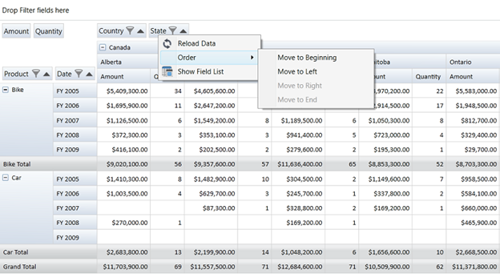

The Grouping bar context menu consists of the following menu items:
1. Reload Data - Refresh the Grid with the Current Item source
2. Show Field List - Launches the PivotGrid Field List
The following are the menu items present in the context menu of Grouping bar items:
1. Reload Data - Refresh the Grid with the Current Item Source
2. Order – It is used to change the position of the item present in the Grouping bar. It contains the following sub menu items:
a. Move to Beginning - Moves the current item to the first position
b. Move to Left - Moves the current item one step towards its left
c. Move to Right - Moves the current item one step towards its right
d. Move to End - Moves the current item to the last position
3. Show Field List - Launches the PivotGrid Field List
Use Case Scenarios
This feature is useful for applications related to Stock Market where the data will change from time to time and users can refresh the grid using the context menu.
Adding Grouping Bar Context Menu

Figure 27: Grouping Bar Context Menu
Sample Link
To access a Conditional Formatting sample:
1. Open the Syncfusion Dashboard.
2. Click Business Intelligence.
3. Click the WPF drop-down list, and select Explore Samples.
4. Navigate to PivotAnalysis.WPF -> Samples -> Grouping Bar -> Context Menu Demo.